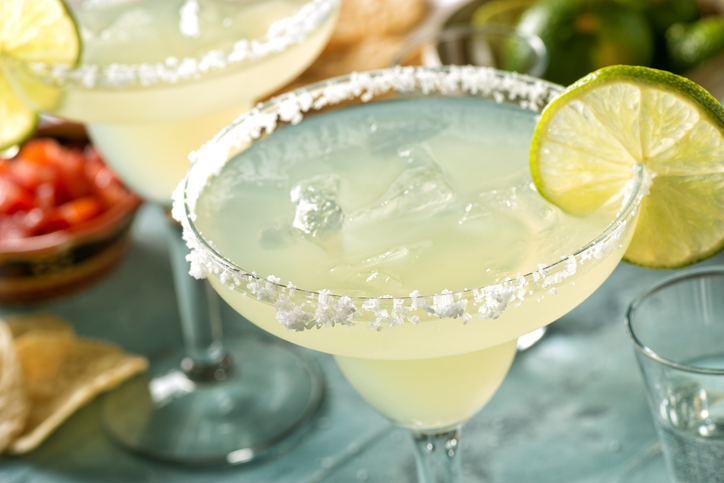

Midnight Margaritas
Description
This famously sweet, sour, and salty drink will forever be an all-time favorite. For only having four ingredients,
this drink packs quite a punch and is sure to soothe any and all troubles.
Ingredients
- 2 oz blanco tequila
- Juice of 1 Whole Lime
- 1/2 oz of triple sec
- Salt for rim (optional)
- Lime wedge, for garnish
Steps
- Salt rim of a highball or footed glass
- Fill cocktail shaker with ice
- Add tequila, lime juice, and triple sec
- Shake and pour into highball or footed glass
- Garnish with wedge of lime
Note, while this concoction can be enjoyed at any hour, it is most enjoyable and likely most effective
at midnight.